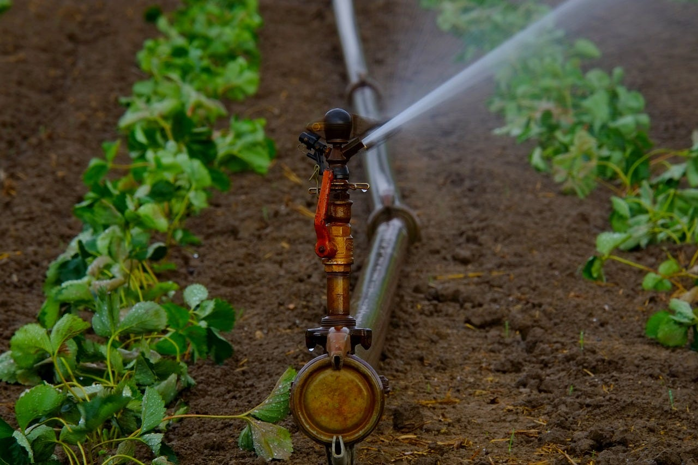
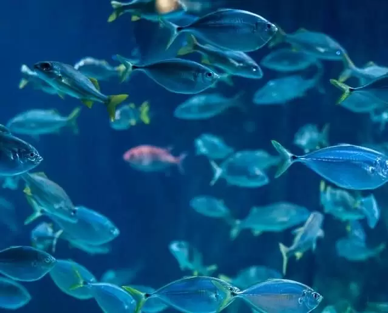
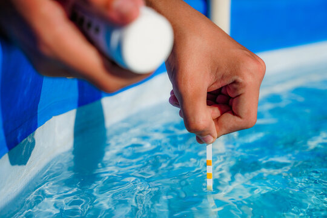

Rapid urbanization and industrial growth in Delhi have significantly increased pressure on water resources, leading to rising levels of water pollution in rivers, groundwater, and municipal supply systems. Industrial discharge, sewage overflow, and untreated effluents have made continuous and accurate water quality monitoring a critical requirement across Delhi.
Traditional laboratory-based water testing methods are often time-consuming, costly, and unsuitable for real-time compliance monitoring. To address these challenges, Delhi industries and authorities are increasingly adopting Online Water Quality Monitoring Systems (EQMS) powered by IoT, automation, and advanced analytics for continuous data acquisition and reporting as per CPCB and DPCC guidelines.
HUMAN ACTIVITIES AND WATER POLLUTION IN DELHI
In Delhi, untreated or partially treated industrial effluents and sewage discharged into drains and rivers introduce harmful pollutants such as heavy metals, organic compounds, and chemical contaminants. These pollutants severely degrade water quality and disrupt aquatic ecosystems, affecting public health and biodiversity.

Industrial activities, construction runoff, and agricultural practices around Delhi NCR contribute to elevated levels of COD, BOD, TSS, ammonia, and other pollutants in surface and groundwater sources. Thermal discharges and chemical residues further worsen water conditions, making real-time monitoring essential for early detection and corrective action.
Agua Instruments provides CPCB and DPCC compliant water quality monitoring solutions for industries, STPs, ETPs, and municipal bodies in Delhi. Our advanced EQMS solutions enable continuous monitoring, OCEMS-ready data transmission, and actionable insights to help organizations reduce environmental impact, ensure compliance, and protect Delhi’s water resources for future generations.
Delhi’s water bodies face continuous stress due to industrialization, population growth, and infrastructure expansion. Online Water Quality Monitoring Systems (EQMS) play a vital role in preserving water quality by providing real-time data on physical, chemical, and biological parameters, enabling authorities and industries to take timely corrective actions.
By deploying CPCB and DPCC compliant EQMS solutions, industries and municipal authorities in Delhi can ensure continuous regulatory compliance, improve transparency, prevent pollution incidents, and support sustainable water management practices. Real-time monitoring helps protect public health, safeguard ecosystems, and maintain long-term water security in Delhi NCR.
Why Choose Agua Instruments for Water Quality Monitoring in Delhi?
CPCB & DPCC Compliant Systems
Fully CPCB and DPCC approved water quality monitoring systems for industrial and municipal compliance in Delhi.
Online Water Monitoring in Delhi
Advanced online water quality monitoring solutions for STPs, ETPs, and industries across Delhi.
OCEMS & IoT Integration
OCEMS-ready, IoT-based systems with real-time data transmission to CPCB and DPCC servers.
Industrial & Municipal Compliance
Reliable monitoring for industrial wastewater, sewage treatment plants, and municipal water supply.
End-to-End Project Support
Complete services including installation, calibration, AMC, and technical support across Delhi NCR.

Real-time water quality monitoring systems for Delhi municipal water treatment plants to ensure safe drinking water by monitoring pH, turbidity, chlorine, and microbial parameters.

Online wastewater monitoring solutions for industries in Delhi to meet CPCB and DPCC compliance through continuous effluent quality measurement.

Continuous monitoring of Delhi’s rivers, lakes, and surface water bodies to track pollution levels, dissolved oxygen, BOD, COD, and chemical contaminants.

Smart water quality monitoring solutions for agriculture in Delhi NCR to improve irrigation efficiency and reduce nutrient runoff.

Online monitoring of pH, temperature, ammonia, and dissolved oxygen to support aquaculture and fish farming operations in Delhi.
High-precision water quality monitoring instruments for Delhi-based research institutions studying water pollution and environmental sustainability.

Water quality monitoring systems for food and beverage industries in Delhi to ensure compliance with food safety and hygiene standards.

Continuous monitoring of chlorine, pH, and microbial parameters to maintain safe swimming pool and recreational water quality in Delhi.

Practical water quality monitoring systems for Delhi schools and colleges to support environmental science and sustainability education.
| Ammonium | NH4 | 0.1 ...1000 mg/L & 0 ... 10 ppm |
| Nitrates | NO₃⁻ | 0.1 ... 20 mg/L |
| Nitrites | NO₂⁻ | 0.01 ...1000 mg/L |
| Total Nitrogen | TN | 0.1 ...1000 mg/L |
| Phosphates | PO4 | 3- 0.01 ... 20 mg/L |
| Total Phosphorus | TP | 0.01 ... 20 mg/L |
| Chemical Oxygen Demand Equivalent | CODeq | 1 ...10000 mg/L |
| COD Dichloromate | CODeq- | 1 ...10000 mg/L |
| Biochemical Oxygen Demand Equivalent | BODeq- | 1 ...10000 mg/L |
| Total Organic Carbon | TOC | 1 ...10000 mg/L |
| TOC High Temperature | TOC-HT | 0-50,000 mgL |
| Sulphides | S2- | 0.1 ...1000 mg/L |
| Sulphites | SO32- | 0.1 ...1000 mg/L |
| Total Solids | TS | 0.1 ...1000 mg/L |
| Total Suspended Solids | TSS | 0.1 ...1000 mg/L |
| Turbidity | TURB | 0.001 ... 10000 NTU |
| Color | COL | 0.01... 2000 Pt-Co |
| Chlorine | Cl2 | 0.01 ... 20 mg/L |
| Chlorine Dioxide | ClO2 | 0.01 ... 20 mg/L |
| Total Chlorine | TCl | 0.1 ...1000 μg/L |
| Chlorophyll | Chl-a | 0.01 ... 100 mg/L |
| Hydrocarbons | HC | 0.01 ... 100 mg/L |
| Oxygen | O2 | 0.01 ... 100 mg/L |
| Conductivity | EC | 0.001 ... 2000 mS/cm |
| pH | pH+ | 0 ... 14H+ |
| Ozone | O3 | 0.01 ... 10 mg/L |
| Aluminium | Al | 0 ... 1 mg/L |
| Total Ammonia Nitrogen | TAN | 0 .... 100 mg/L |